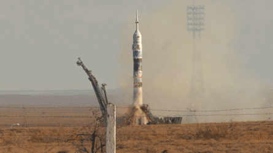

Космонавтика
Российская космонавтика имеет богатую историю и является одной из лидеров в мире в области космических исследований и промышленности. С начала космической эры в России было проведено множество значимых миссий, включая первый полет в космос Юрия Гагарина, первый выход человека в открытый космос, первые многодневные полеты и многие другие. Российские космические корабли "Союз" и "Прогресс" по-прежнему используются для доставки астронавтов и грузов на Международную космическую станцию (МКС). Российская космонавтика также активно работает над разработкой новых технологий и миссий, таких как планируемые космические полеты на Луну, Марс и даже за пределы Солнечной системы. Российские ученые также продолжают работать над различными проектами, такими как создание новых ракет, разработка средств связи, телекоммуникационных систем, средств наблюдения Земли и многих других. В целом, Российская космонавтика является одним из ключевых игроков в космической отрасли и продолжает делать значимый вклад в исследование и понимание космоса, а также в развитие новых технологий для будущих миссий и экспедиций.
Запуск Ракеты Союз ТМА-11М На Космодроме Байконур
Более подробная информациия о полёте человека в космос
Первая построенная ракета в СССР
Р-7 была межконтинентальной баллистической ракетой и использовалась как носитель для запуска космических кораблей и спутников. В частности, именно на Р-7 был запущен первый искусственный спутник Земли - Спутник-1, 4 октября 1957 года. Р-7 имела два ступени, была длиной около 30 метров и могла доставить груз массой до 5 тонн на орбиту Земли. Эта ракета была оснащена жидкостным ракетным двигателем, который обеспечивал высокую мощность и точность полета.
Первый полёт ракеты
Первая ракета СССР была запущена 17 августа 1957 года и получила название Р-7. Эта ракета была разработана и построена под руководством Сергея Королева, который считается отцом советской космонавтики.
Запуск Р-7 и запуск Спутника-1 вызвали огромный резонанс во всем мире и стали важным этапом в развитии космической технологии. Они показали, что СССР имеет значительные достижения в области космических исследований и является серьезным конкурентом для США в космической гонке.
Первый полёт человека в космос
Юрий Гагарин
Первый полет в космос человека произошел 12 апреля 1961 года. В этот день советский космонавт Юрий Гагарин на борту космического корабля "Восток-1" совершил первый орбитальный полет в истории космонавтики. Космический корабль "Восток-1" был запущен с космодрома Байконур в Казахстане. Полет Юрия Гагарина продолжался около 108 минут, за которые он совершил один оборот вокруг Земли. Во время полета космонавт испытывал невесомость, наблюдал за планетой и совершил несколько научных экспериментов.
После завершения полета Юрий Гагарин стал героем Советского Союза и получил мировую известность. Его полет в космос был важным этапом в развитии космической технологии и стал символом технического превосходства СССР в космической гонке с США. Значение полета Гагарина заключается не только в технических достижениях, но и в символическом значении для всего мира. Он подчеркнул, что возможности человечества неограничены и что мы можем идти дальше в наших исследованиях, преодолевая любые границы.
Достижения в космонавтике
1. Первый спутник Земли: СССР запустил первый искусственный спутник Земли - Спутник-1, 4 октября 1957 года.
2. Первый полет человека в космос: 12 апреля 1961 года, Юрий Гагарин стал первым человеком, который совершил полет в космос.
3. Первая женщина-космонавт: 16 июня 1963 года, Валентина Терешкова стала первой женщиной, которая совершила полет в космос.
4. Множество космических программ и экспедиций: Россия (и СССР) отправили на орбиту Земли и на межпланетные миссии множество космических кораблей, в том числе "Восток", "Восход", "Союз", "Прогресс", "Мир", "Мир-2", "Марс-3", "Венера-7", "Луна-16" и многие другие.